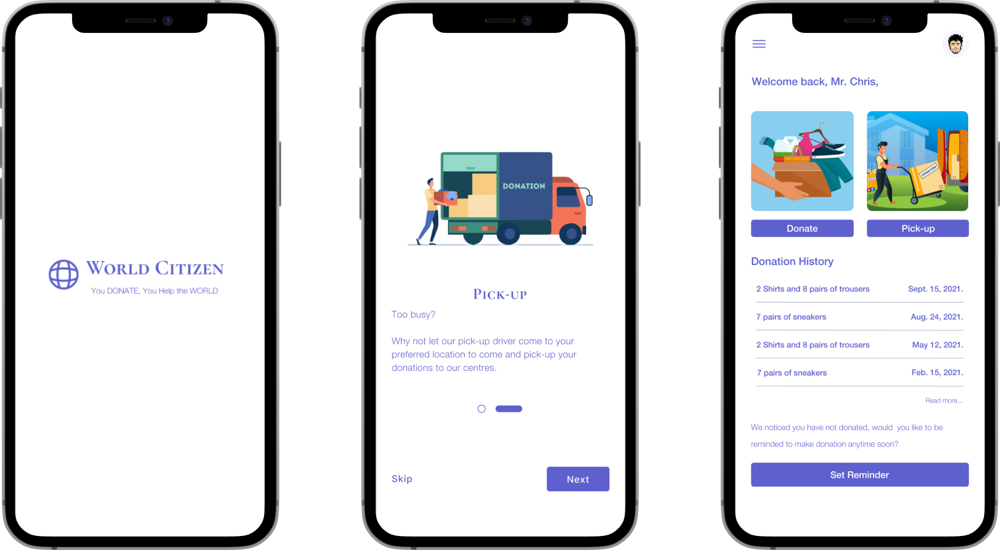

World Citizen
Overview
This application is designed by a donation organization to help people donate at ease. Overtime, the organization doesn’t have a platform for users who would love to donate but doesn’t know where and how to go about it.
This platform would help it users know the nearest location for donation and also help it users request for donation to be picked up.
Role
UI/UX Designer, Ux Researcher